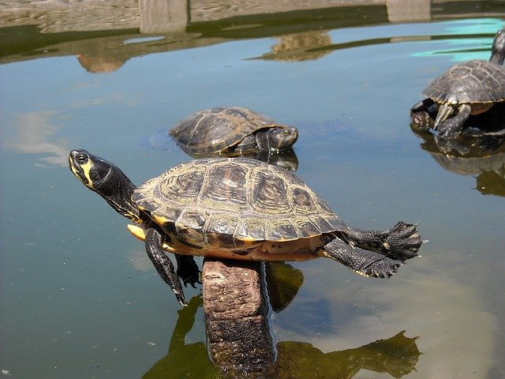

Welcome
You can use the left and right arrow keys to navigate
What are we trying to learn?

You're looking at the results of simulating a bunch of interacting bacteria growing and forming a biofilm🔍a community of bacteria sticking together, often slimy. We can use simulations like these to understand how different interactions between bacteria affect their ecosystem🔍a community of organisms and the environment in which they live.
(Whenever you see a magnifying glass, you can hover your mouse over it to see more information.)
What we'll be learning about
We'll be looking at a specific example of how bacteria can compete with each other, but we'll also be using to learn about:
- How interactions affect ecosystems
- How we use simulations to understand those effects
- How to design an in silico🔍'Performed on the computer'. There's also:
- in vivo(within an organism, like a lab rat)
- in vitro (in things like test tubes or Petri dishes)
- How to interpret figures from those experiments
A few questions

Let's think about a few open-ended questions, just to warm up and get you thinking. If you've been asked to, please write down your thoughts. But also, don't worry, these questions are:
- not marked for grades
- not the kind with clearly correct answers
Tell me what you want, what you really really want!
Imagine you're your favourite organism.
Q: What sorts of things do you need to grow and survive?
Q: In particular, what sort of things might other organisms also need, so you'll have to compete for them?
Rising up to the challenge of your rivals!

OK, you've probably got some idea of something you'll have to compete for.
Q:Can you brainstorm two or three different strategies you might use to have an advantage while competing?
Want an example?🔍Think about how plants want sunlight - one might spend a lot of energy growing more leaves to gather more light, another might use that energy growing taller so it's not shaded by competitors.
You can't always get what you want.
One last question.
The ecological context almost always affects whether a strategy is a good or bad. For example, spending energy conserving water is great in a desert, probably not as useful in a rain forest.
Q: When might your favourite strategy from the last question not be so useful? (Maybe even a drawback!)

Ecological success is a matter of balance!
When you're done, please proceed to the Competition between microbes section.